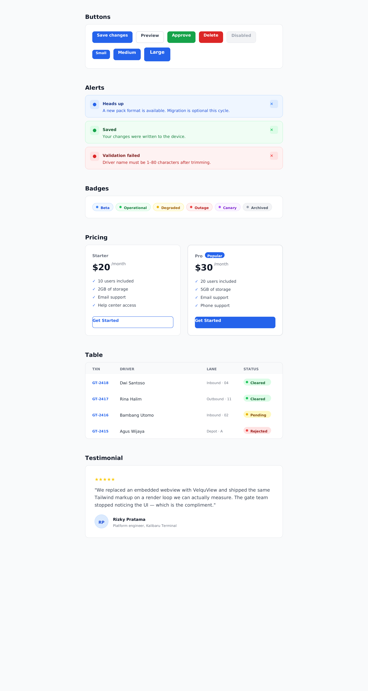
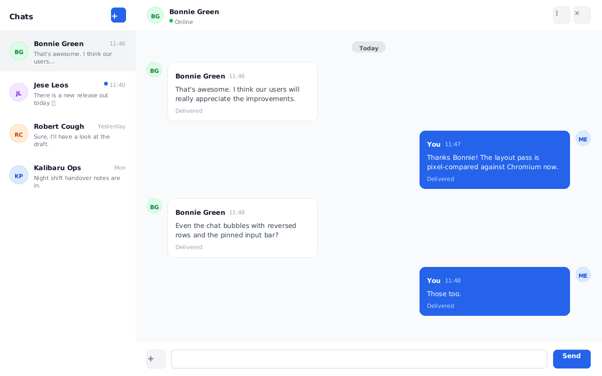
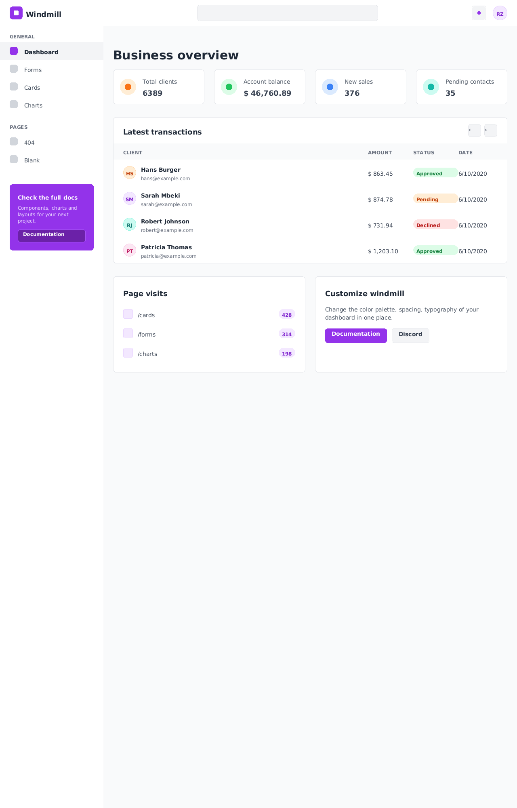

Same file. Two engines. Measured.
Four sample sets — a login card, a component stack, a chat UI, and a full admin dashboard — each rendered by VelquView and by Chromium with real Tailwind v3.4. Geometry measured, not eyeballed.

Sign-in card
geometry identical to the pixelCard at exactly x 450–830, y 204–594 in both engines. Ported from Flowbite's card-with-form. Full side-by-side on GitHub →


Component stack ×6
4 of 6 sections at 0pxButtons, alerts, badges, pricing, table, testimonial — max drift 4px, from text metrics alone. Full side-by-side on GitHub →


Chat UI
bubbles exact, both enginesOutgoing bubbles via flex-row-reverse land at identical coordinates in taffy and Chromium. Full side-by-side on GitHub →


Windmill dashboard clone
full page, no layout divergenceA complete MIT admin template (3k★) — sidebar, stats, table, panels — cloned and measured. Full side-by-side on GitHub →
Remaining known deltas are paint-level (glyph weight, placeholder color, no emoji) — documented in FINDINGS.md, on the post-acceptance engine list.